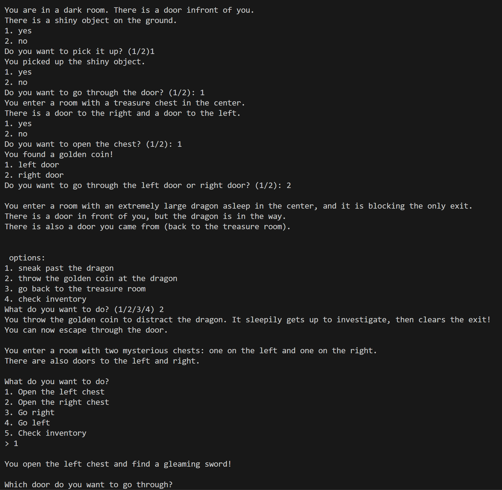
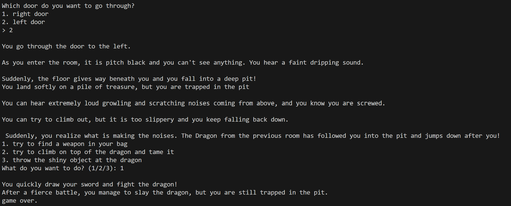

This project is a Python program of which I made in class. It is a simple text based adventure game where the player can choose different paths and make choices that affect the outcome of the game. The game is designed to be simple and easy to understand, with a focus on storytelling and player choice. The game is built using Python, and is designed to be run in a terminal or command prompt.
The game is designed to be interactive, with the player making choices that affect the outcome of the game. The game is designed to be easy to use, with clear instructions and a simple interface.
Development Process
The development process for this project involved several steps. First, I created a plan for the game, including the story and the different paths the player could take. Next, I wrote the Python code for the game, including the structure and content. After that, I tested the game to ensure it was working correctly and made any necessary adjustments. Finally, I added comments to the code to explain how it works and to make it easier to understand.
Here is an example of a complete path the user could take.


As I said, this is just one path the user could take, there are tons more to choose from.
Relevant Implications
End Users
The end users of this game are teenagers and young adults (ages 13–18) who enjoy simple, interactive, and imaginative games. These users are likely familiar with basic games or interactive fiction and are looking for short, fun experiences they can play quickly. Some of them may also be classmates, friends, or teachers reviewing the project. They may use Windows or Mac computers, and the game will be played in a Python console (text-only). Most users will have some understanding of how to input choices using the keyboard.
Needs/Wants
End users are likely to want: Clear instructions so they understand what to do next. A sense of progression, like gaining items or advancing rooms. Fair challenges, where choices have consequences but aren't random. Inventory and lives to track their progress. Interesting story elements, like dragons, traps, and treasure. A working game with no bugs or crashes. They need the game to: Be easy to follow, even with just text. Respond to their inputs correctly. Provide feedback when they do something right or wrong. Be playable to the end (have a win/lose condition).
Requirements and Specifications
The game must include: A starting room that introduces the game. At least 4 rooms, each with different challenges or events. A working inventory system. A lives system that reduces lives after mistakes. Multiple endings (e.g. win or die). Player choice-based navigation. Basic error handling (invalid input). Clear text instructions and story.
Detailed Requirements
tarting Room The game starts in room1() with an introduction and a shiny object on the floor. 4+ Rooms The game includes room1 to room5 and pitroom(), each with unique events like treasure, dragons, or death traps. Inventory System A list called inventory stores items like "sword", "shiny object", and "golden coin". The print_inventory() function displays them. Lives System The player starts with 3 lives. The function lose_life() reduces lives and prints the current total. If lives reach 0, it ends the game. Multiple Endings The player can: win (tame the dragon and escape), die from traps (walls, mimic, dragon), or get stuck. Player Choices Each room uses input() to give the player choices (e.g. "1. sneak", "2. throw coin"). Error Handling If players type an invalid choice, the game prints “Invalid choice” and asks again. Instructions & Story Each room has printed descriptions using print(), explaining the situation and next steps. The intro includes a privacy notice.